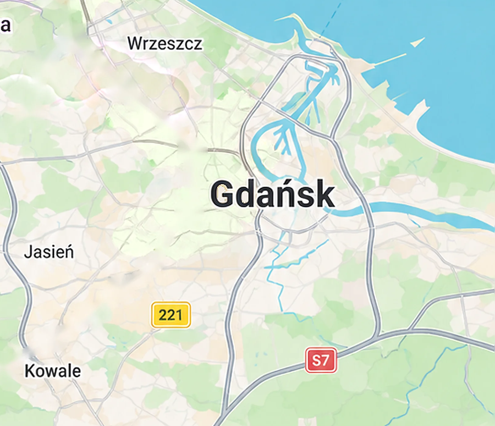
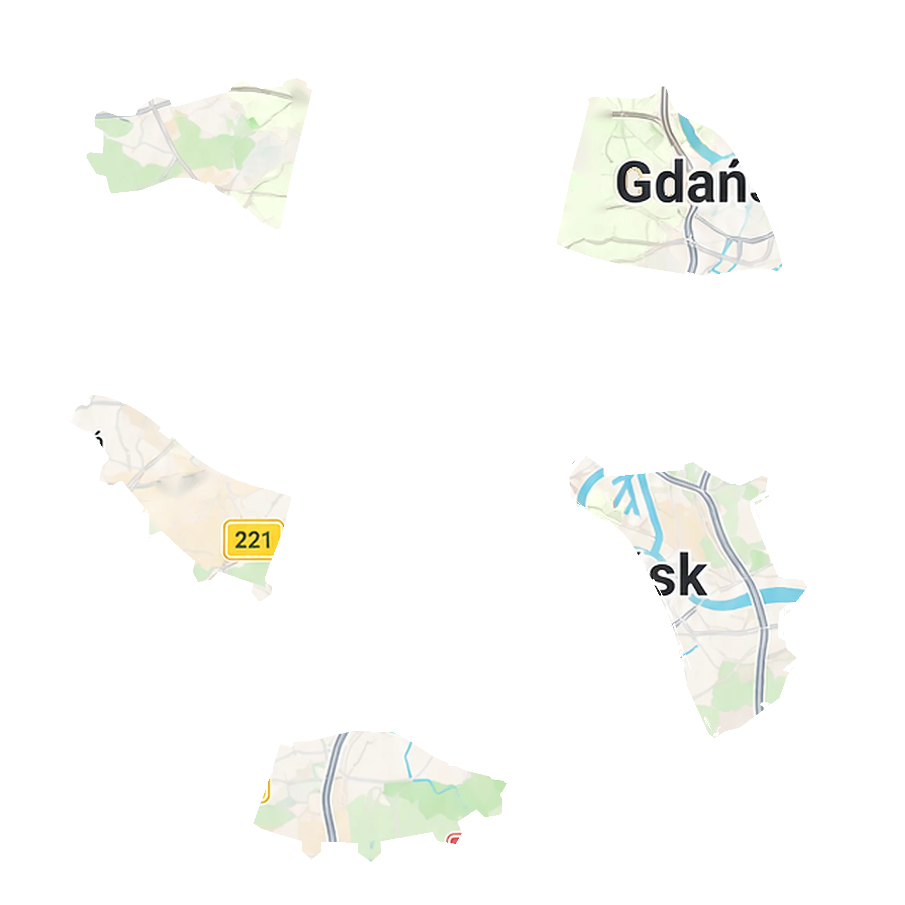
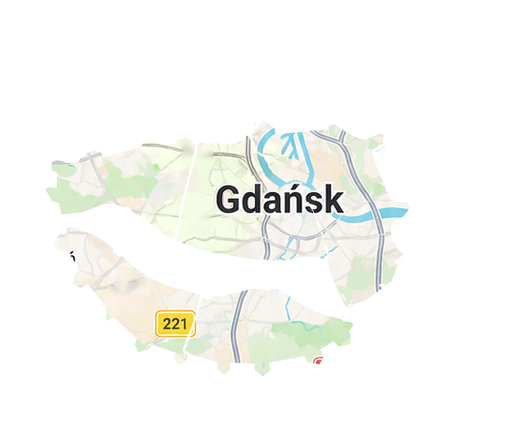

Спосаб кіравання A зацверджаны 2026-11-23. Умова ўладальніка: усе пяць частак павінны грунтавацца на карце Гданьска. Новыя бачныя кнопкі не патрэбныя. Ніжэй — варыянт сапраўднай геаграфічнай асновы для асобнай візуальнай праверкі.
За аснову ўзятая наяўная ў праекце ілюстраваная карта Труймяста about-map.webp з прывязкамі да Гданьска. Яна не ў геадэзічным маштабе; цяперашнія формы фрагментаў захаваныя толькі для параўнання. Гэта не зацверджаныя production-асеты.



Фінальную геаграфічную дакладнасць і правы на паўторнае выкарыстанне выявы трэба праверыць да змены production-асетаў.